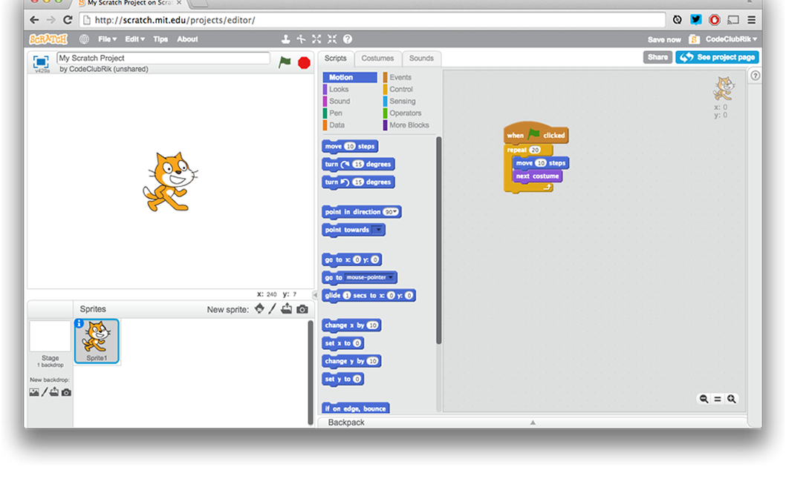

What is Scratch?
Scratch is a graphical programming language, developed by the Lifelong Kindergarten group at the Massachusetts Institute of Technology. Children can drag and combine code blocks to make a range of programs, including animations, stories, musical instruments and games. It’s a bit like the programming equivalent of Lego!

We recommend reading the Getting Started with Scratch guide before you start, which gives a good introduction on Scratch features and putting together simple programs. The first Scratch project (called Rock Band) explains the creating, saving and running of a simple Scratch program in more detail.
Using Scratch
Scratch can either be used online, or downloaded and used offline. There are advantages and disadvantages to either approach. Using the online editor doesn’t require any software to be installed on the school’s network. Children can save their projects online, meaning that they can be accessed from home and school. Projects can also be shared online with the Scratch community, giving them a real audience for their creations. The online editor does require a login and a constant Internet connection, and the offline editor may be a better choice if either of these are likely to be a problem. It is possible to create multiple Scratch accounts with a single email address, which means that you (or your teacher) can create accounts for your children, and they won’t need an email address to sign up. If children do create their own accounts, it may be helpful if children share their usernames and passwords with you and the teacher, in case they forget them!
Further Resources
Scratch Cards
Sometimes our Scratch projects make reference to using ‘Scratch Cards’, which can be downloaded and printed for children to use. Scratch cards help with common programming tasks, and we recommend printing these out, and having them available to children as they work on their projects. It might be a good idea to laminate the Scratch Cards, so that they can be reused. We have also produced some additional cards, which have been added to the downloadable project materials of the relevant projects.